第 200–191 名
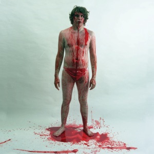
Blood Visions
Jay Reatard
第 200 名 · 2006
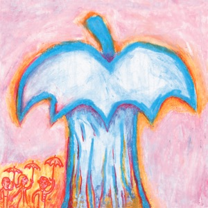
Apple O'
Deerhoof
第 199 名 · 2003
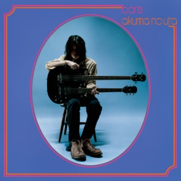
Akuma No Uta
Boris
第 198 名 · 2005
All Hour Cymbals
Yeasayer
第 197 名 · 2007
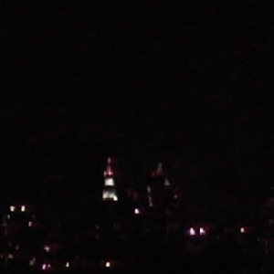
The Disintegration Loops I-IV
William Basinski
第 196 名 · 2003
The Letting Go
Bonnie “Prince” Billy
第 195 名 · 2006

We Love Life
Pulp
第 194 名 · 2001
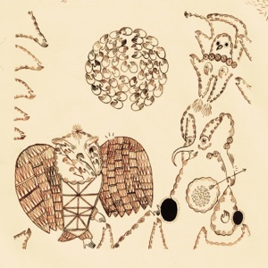
Rejoicing in the Hands
Devendra Banhart
第 193 名 · 2004
Bang Bang Rock & Roll
Art Brut
第 192 名 · 2005

Talkie Walkie
Air
第 191 名 · 2004
第 190–181 名
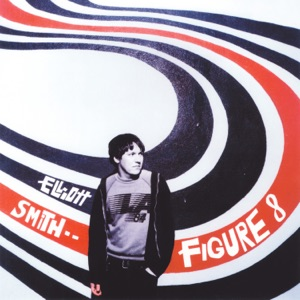
Figure 8
Elliott Smith
第 190 名 · 2000
Multiply
Jamie Lidell
第 189 名 · 2005
Dead Cities, Red Seas & Lost Ghosts
M83
第 188 名 · 2003
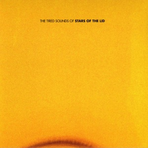
The Tired Sounds of...
Stars of the Lid
第 187 名 · 2001
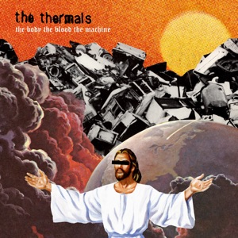
The Body, the Blood, the Machine
The Thermals
第 186 名 · 2006
The Fix
Scarface
第 185 名 · 2002
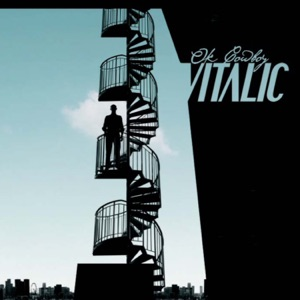
OK Cowboy
Vitalic
第 184 名 · 2005

Whatever People Say I Am, That’s What I’m Not
Arctic Monkeys
第 183 名 · 2006
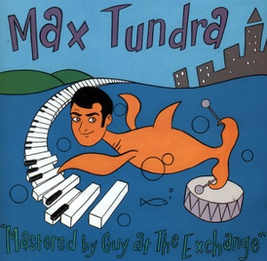
Mastered by the Guy at the Exchange
Max Tundra
第 182 名 · 2002
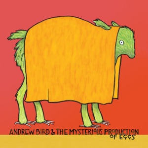
Andrew Bird & the Mysterious Production of Eggs
Andrew Bird
第 181 名 · 2005
第 180–171 名
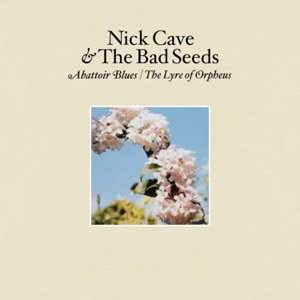
Abattoir Blues/The Lyre of Orpheus
Nick Cave & the Bad Seeds
第 180 名 · 2004

Let’s Get Out of This Country
Camera Obscura
第 179 名 · 2006
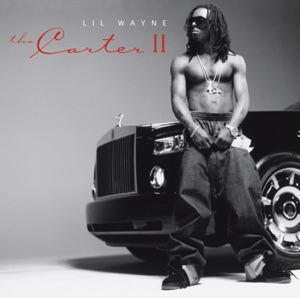
Tha Carter II
Lil Wayne
第 178 名 · 2005
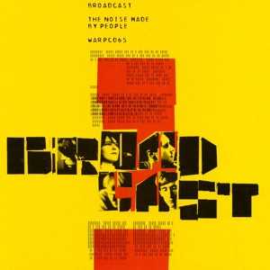
The Noise Made by People
Broadcast
第 177 名 · 2000

Tallahassee
The Mountain Goats
第 176 名 · 2002
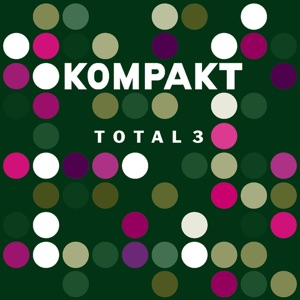
Total 3
Various Artists
第 175 名 · 2001
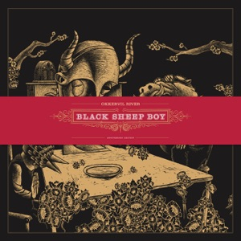
Black Sheep Boy
Okkervil River
第 174 名 · 2005
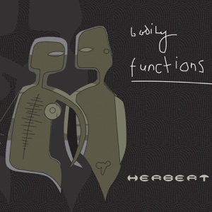
Bodily Functions
Matthew Herbert
第 173 名 · 2001
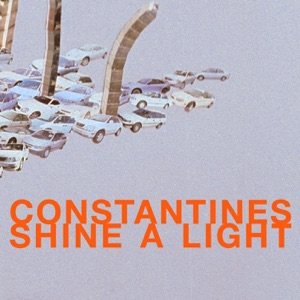
Shine a Light
Constantines
第 172 名 · 2003
Thunder, Lightning, Strike
The Go! Team
第 171 名 · 2003
第 170–161 名
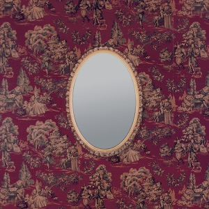
Fevers and Mirrors
Bright Eyes
第 170 名 · 2000
Like Water for Chocolate
Common
第 169 名 · 2000

Roots and Crowns
Califone
第 168 名 · 2006
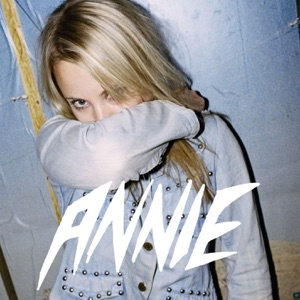
Anniemal
Annie
第 167 名 · 2004
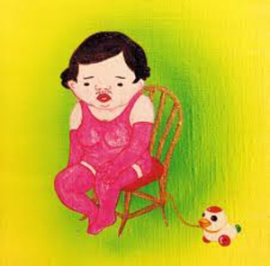
Insignificance
Jim O’Rourke
第 166 名 · 2001
Alcachofa
Villalobos
第 165 名 · 2003
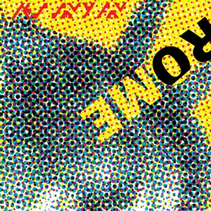
Rome (Written Upside Down) EP
Les Savy Fav
第 164 名 · 2000
Uproot
DJ /rupture
第 163 名 · 2008
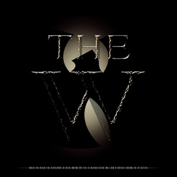
The W
Wu-Tang Clan
第 162 名 · 2000
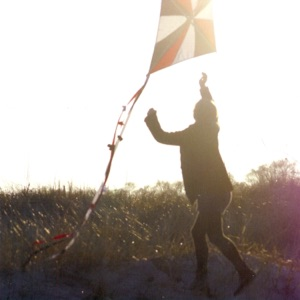
No Way Down
Air France
第 161 名 · 2008
第 160–151 名
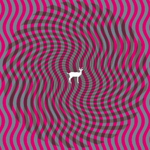
Cryptograms
Deerhunter
第 160 名 · 2007

Night Ripper
Girl Talk
第 159 名 · 2006
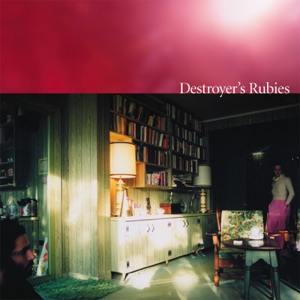
Destroyer’s Rubies
Destroyer
第 158 名 · 2006
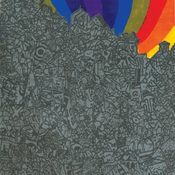
Wonderful Rainbow
Lightning Bolt
第 157 名 · 2003
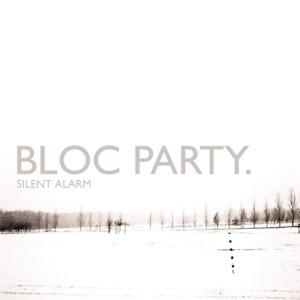
Silent Alarm
Bloc Party
第 156 名 · 2005

Lord Willin’
Clipse
第 155 名 · 2002
The Pretty Toney Album
Ghostface
第 154 名 · 2004
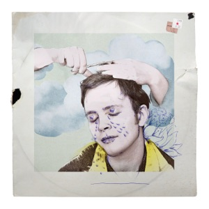
Night Falls Over Kortedala
Jens Lekman
第 153 名 · 2007
The Cold Vein
Cannibal Ox
第 152 名 · 2001

Bows and Arrows
The Walkmen
第 151 名 · 2004
第 150–141 名
Twin Cinema
The New Pornographers
第 150 名 · 2005
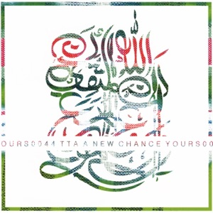
A New Chance
The Tough Alliance
第 149 名 · 2007
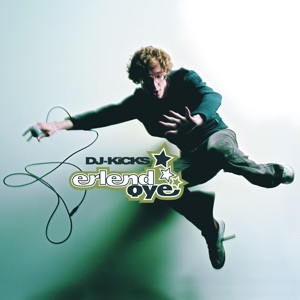
DJ Kicks
Erlend Øye
第 148 名 · 2004
King
T.I.
第 147 名 · 2006
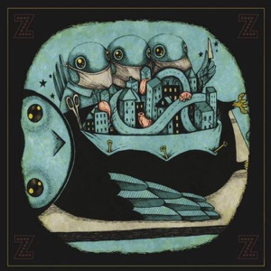
Z
My Morning Jacket
第 146 名 · 2005

Blueberry Boat
The Fiery Furnaces
第 145 名 · 2004
I Get Wet
Andrew W.K.
第 144 名 · 2001
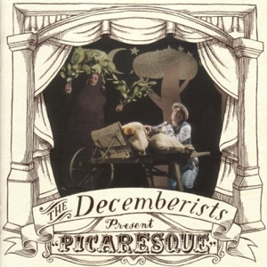
Picaresque
The Decemberists
第 143 名 · 2005
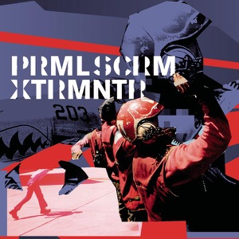
XTRMNTR
Primal Scream
第 142 名 · 2000
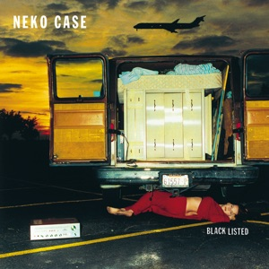
Blacklisted
Neko Case
第 141 名 · 2002
第 140–131 名
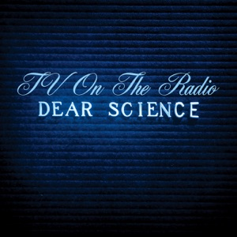
Dear Science
TV on the Radio
第 140 名 · 2008
Nine Times That Same Song
Love Is All
第 139 名 · 2006
Up the Bracket
The Libertines
第 138 名 · 2002
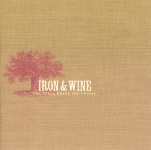
The Creek Drank the Cradle
Iron & Wine
第 137 名 · 2002
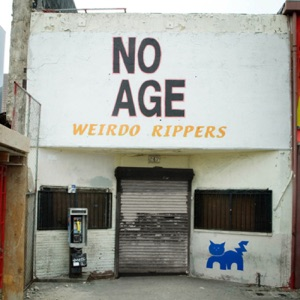
Weirdo Rippers
No Age
第 136 名 · 2007
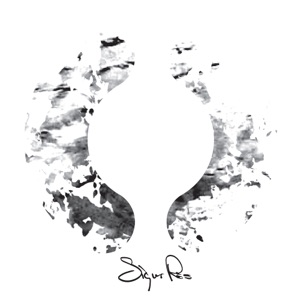
( )
Sigur Rós
第 135 名 · 2002

Songs for the Deaf
Queens of the Stone Age
第 134 名 · 2002
New Amerykah Part One: 4th World War
Erykah Badu
第 133 名 · 2008
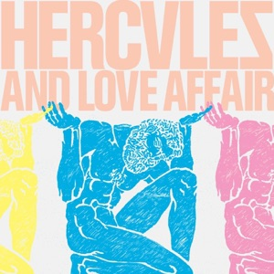
Hercules and Love Affair
Hercules and Love Affair
第 132 名 · 2008
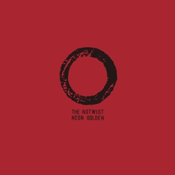
Neon Golden
The Notwist
第 131 名 · 2002
第 130–121 名
We Got It 4 Cheap Vol. 2
Clipse
第 130 名 · 2005
A Grand Don’t Come for Free
The Streets
第 129 名 · 2004
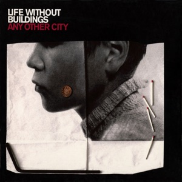
Any Other City
Life Without Buildings
第 128 名 · 2001
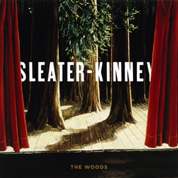
The Woods
Sleater-Kinney
第 127 名 · 2005
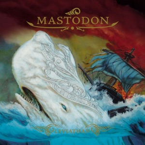
Leviathan
Mastodon
第 126 名 · 2004
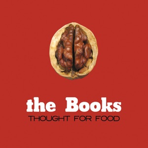
Thought for Food
The Books
第 125 名 · 2002

Stories From the City, Stories From the Sea
PJ Harvey
第 124 名 · 2000
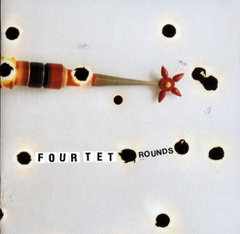
Rounds
Four Tet
第 123 名 · 2003
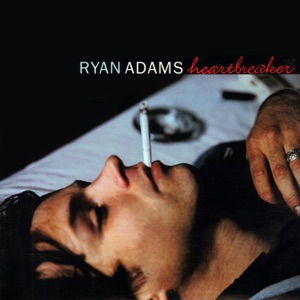
Heartbreaker
Ryan Adams
第 122 名 · 2000
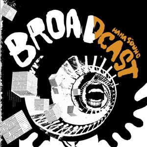
Haha Sound
Broadcast
第 121 名 · 2003
第 120–111 名
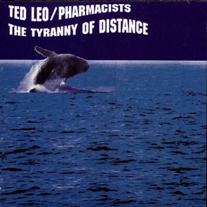
The Tyranny of Distance
Ted Leo and the Pharmacists
第 120 名 · 2001
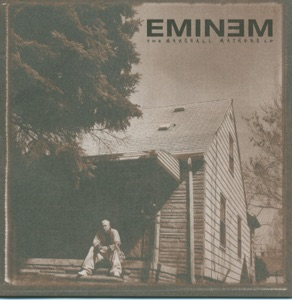
The Marshall Mathers LP
Eminem
第 119 名 · 2000
Hot Shots II
The Beta Band
第 118 名 · 2001
Things We Lost in the Fire
Low
第 117 名 · 2001
Immer 1
Michael Mayer
第 116 名 · 2002
Oh, Inverted World
The Shins
第 115 名 · 2001
Purple Haze
Cam'ron
第 114 名 · 2004
LCD Soundsystem
LCD Soundsystem
第 113 名 · 2005
The Reminder
Feist
第 112 名 · 2007
Saturdays=Youth
M83
第 111 名 · 2008
第 110–101 名

Boxer
The National
第 110 名 · 2007
Everything All the Time
Band of Horses
第 109 名 · 2006
Murray Street
Sonic Youth
第 108 名 · 2002
†
Justice
第 107 名 · 2007
Up in Flames
Caribou
第 106 名 · 2003
Mirrored
Battles
第 105 名 · 2007
Give Up
The Postal Service
第 104 名 · 2003
Piracy Funds Terrorism, Vol. 1
M.I.A. / Diplo
第 103 名 · 2004
The Sunset Tree
The Mountain Goats
第 102 名 · 2005
Franz Ferdinand
Franz Ferdinand
第 101 名 · 2004
第 100–91 名
Source Tags and Codes
...And You Will Know Us by the Trail of Dead
第 100 名 · 2002
Da Drought 3
Lil Wayne
第 99 名 · 2007
You Are Free
Cat Power
第 98 名 · 2003
Change
The Dismemberment Plan
第 97 名 · 2001
Girls Can Tell
Spoon
第 96 名 · 2001

Yellow House
Grizzly Bear
第 95 名 · 2006

Mclusky Do Dallas
Mclusky
第 94 名 · 2002
As Heard on Radio Soulwax, Pt. 2
2 Many DJs
第 93 名 · 2002
Vespertine
Björk
第 92 名 · 2001

Mass Romantic
The New Pornographers
第 91 名 · 2000
第 90–81 名
The Black Album
Jay Z
第 90 名 · 2003
Apologies to the Queen Mary
Wolf Parade
第 89 名 · 2005
The Meadowlands
The Wrens
第 88 名 · 2003

Graduation
Kanye West
第 87 名 · 2007
The Life Pursuit
Belle and Sebastian
第 86 名 · 2006
Pop
GAS
第 85 名 · 2000
Rings Around the World
Super Furry Animals
第 84 名 · 2001
Ys
Joanna Newsom
第 83 名 · 2006
Sea Change
Beck
第 82 名 · 2002
The Warning
Hot Chip
第 81 名 · 2006
第 80–71 名
Suburban Light
The Clientele
第 80 名 · 2000
FutureSex/LoveSounds
Justin Timberlake
第 79 名 · 2006
Nouns
No Age
第 78 名 · 2008
Miss E: So Addictive
Missy Elliott
第 77 名 · 2001
Last Exit
Junior Boys
第 76 名 · 2004

Fishscale
Ghostface Killah
第 75 名 · 2006

Elephant
The White Stripes
第 74 名 · 2003

The Glow, Pt. 2
The Microphones
第 73 名 · 2001
One Beat
Sleater-Kinney
第 72 名 · 2002

Third
Portishead
第 71 名 · 2008
第 70–61 名
Greetings from Michigan: The Great Lakes State
Sufjan Stevens
第 70 名 · 2003
Drum’s Not Dead
Liars
第 69 名 · 2006

Robyn
Robyn
第 68 名 · 2005
Yoshimi Battles the Pink Robots
The Flaming Lips
第 67 名 · 2002

Donuts
J Dilla
第 66 名 · 2006
Lift Your Skinny Fists like Antennas to Heaven
Godspeed You! Black Emperor
第 65 名 · 2000

Boys and Girls in America
The Hold Steady
第 64 名 · 2006

Hissing Fauna, Are You the Destroyer?
Of Montreal
第 63 名 · 2007
Boy in Da Corner
Dizzee Rascal
第 62 名 · 2003

In Ghost Colours
Cut Copy
第 61 名 · 2008
第 60–51 名
Guitar Romantic
The Exploding Hearts
第 60 名 · 2003

Hearts of Oak
Ted Leo and the Pharmacists
第 59 名 · 2003

From Here We Go Sublime
The Field
第 58 名 · 2007

Echoes
The Rapture
第 57 名 · 2003

Bitte Orca
Dirty Projectors
第 56 名 · 2009

Feels
Animal Collective
第 55 名 · 2005
Arular
M.I.A.
第 54 名 · 2005

Internal Wrangler
Clinic
第 53 名 · 2000

Hell Hath No Fury
Clipse
第 52 名 · 2006
Vampire Weekend
Vampire Weekend
第 51 名 · 2008
第 50–41 名

Microcastle / Weird Era Cont.
Deerhunter
第 50 名 · 2008

I Am a Bird Now
Antony and the Johnsons
第 49 名 · 2005

Separation Sunday
The Hold Steady
第 48 名 · 2005

The Milk-Eyed Mender
Joanna Newsom
第 47 名 · 2004
Chutes Too Narrow
The Shins
第 46 名 · 2003
The Argument
Fugazi
第 45 名 · 2001
Voodoo
D’Angelo
第 44 名 · 2000
Vocalcity
Luomo
第 43 名 · 2000
Veckatimest
Grizzly Bear
第 42 名 · 2009
Untrue
Burial
第 41 名 · 2007
第 40–31 名
Alligator
The National
第 40 名 · 2005
Vision Creation Newsun
Boredoms
第 39 名 · 2000
It’s Never Been Like That
Phoenix
第 38 名 · 2006
And Then Nothing Turned Itself Inside-Out
Yo La Tengo
第 37 名 · 2000
Original Pirate Material
The Streets
第 36 名 · 2002
Ga Ga Ga Ga Ga
Spoon
第 35 名 · 2007
Amnesiac
Radiohead
第 34 名 · 2001

Rooty
Basement Jaxx
第 33 名 · 2001
Fleet Foxes
Fleet Foxes
第 32 名 · 2008

Return to Cookie Mountain
TV on the Radio
第 31 名 · 2006
第 30–21 名
Geogaddi
Boards of Canada
第 30 名 · 2002
For Emma, Forever Ago
Bon Iver
第 29 名 · 2007
The College Dropout
Kanye West
第 28 名 · 2004
Sung Tongs
Animal Collective
第 27 名 · 2004
Endless Summer
Fennesz
第 26 名 · 2001

Madvillainy
Madvillain
第 25 名 · 2004

Fever to Tell
Yeah Yeah Yeahs
第 24 名 · 2003

You Forgot It in People
Broken Social Scene
第 23 名 · 2002

Kala
M.I.A.
第 22 名 · 2007

In Rainbows
Radiohead
第 21 名 · 2007
第 20–11 名

Turn on the Bright Lights
Interpol
第 20 名 · 2002
Kill the Moonlight
Spoon
第 19 名 · 2002

Late Registration
Kanye West
第 18 名 · 2005

Sound of Silver
LCD Soundsystem
第 17 名 · 2007
Illinois
Sufjan Stevens
第 16 名 · 2005
Silent Shout
The Knife
第 15 名 · 2006

Merriweather Post Pavilion
Animal Collective
第 14 名 · 2009
Stankonia
OutKast
第 13 名 · 2000

White Blood Cells
The White Stripes
第 12 名 · 2001

Supreme Clientele
Ghostface Killah
第 11 名 · 2000
第 10–1 名

Since I Left You
The Avalanches
第 10 名 · 2000
Person Pitch
Panda Bear
第 9 名 · 2007
Agaetis Byrjun
Sigur Rós
第 8 名 · 2000

Is This It
The Strokes
第 7 名 · 2001
The Moon & Antarctica
Modest Mouse
第 6 名 · 2000
The Blueprint
Jay Z
第 5 名 · 2001
Yankee Hotel Foxtrot
Wilco
第 4 名 · 2002

Discovery
Daft Punk
第 3 名 · 2001

Funeral
Arcade Fire
第 2 名 · 2004

Kid A
Radiohead
第 1 名 · 2000
找不到符合的作品，換個關鍵字試試。